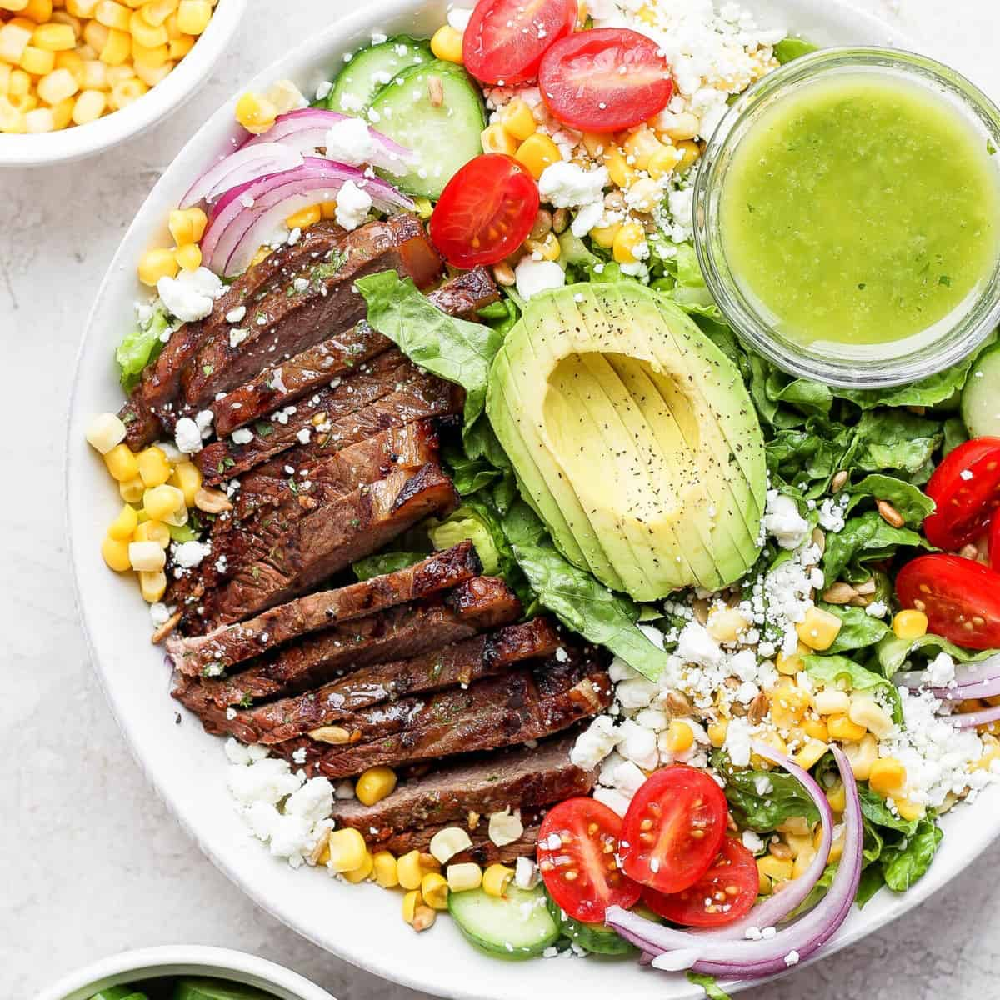

Conscious Parenting NI
Food & Nutrition
Real food, made together.
Real food a body can actually use, and as little of the sugar, additives and cheap oils as a thing allows. The best of it is made with your child — the one who helps make it is the one who eats it.
Growing here In progress
The recipes are the start. The rest of this pillar is being built out, same first-principles voice — the real reason behind each thing, not "because it's healthy":
- What the additives actually do — plain-language read of the E-numbers, sweeteners and "natural flavourings" on the packet, and which genuinely matter.
- The sugar picture — where the hidden sugar is, what it does to a small appetite and mood, and simple swaps that don't feel like punishment.
- Lunchbox & on-the-go — real-food ideas that survive a bag and a morning, for school days and days out.
- The fussy stage — why it happens, why pressure backfires, and the calm long-game that works.
- Grow & forage a little — a windowsill herb, a few spuds, brambles in autumn: food a child has a hand in.